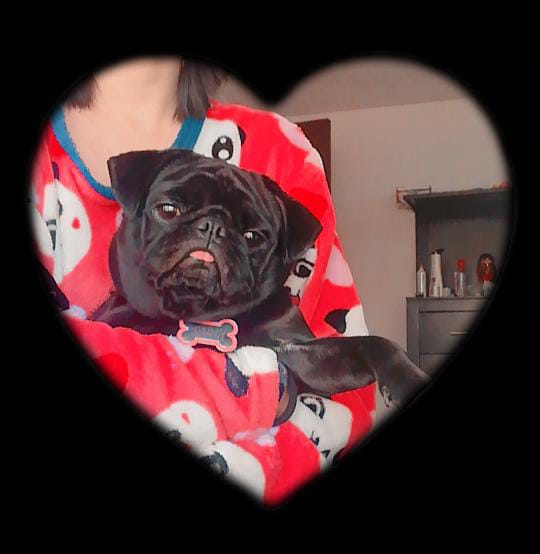
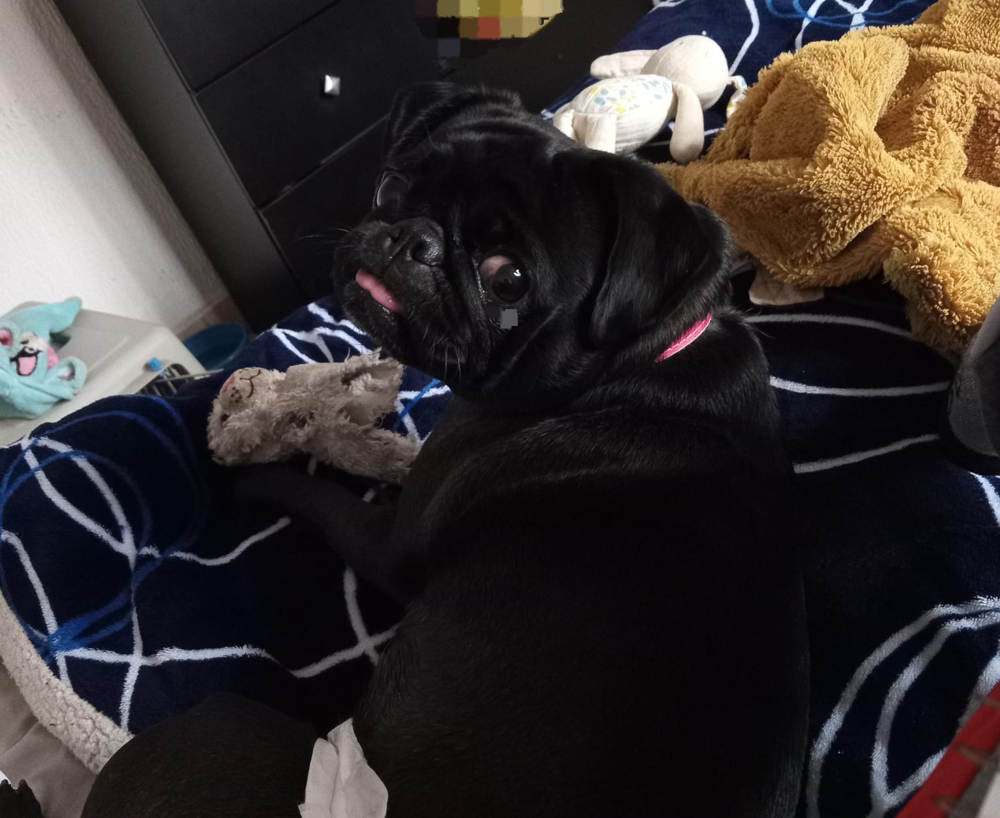
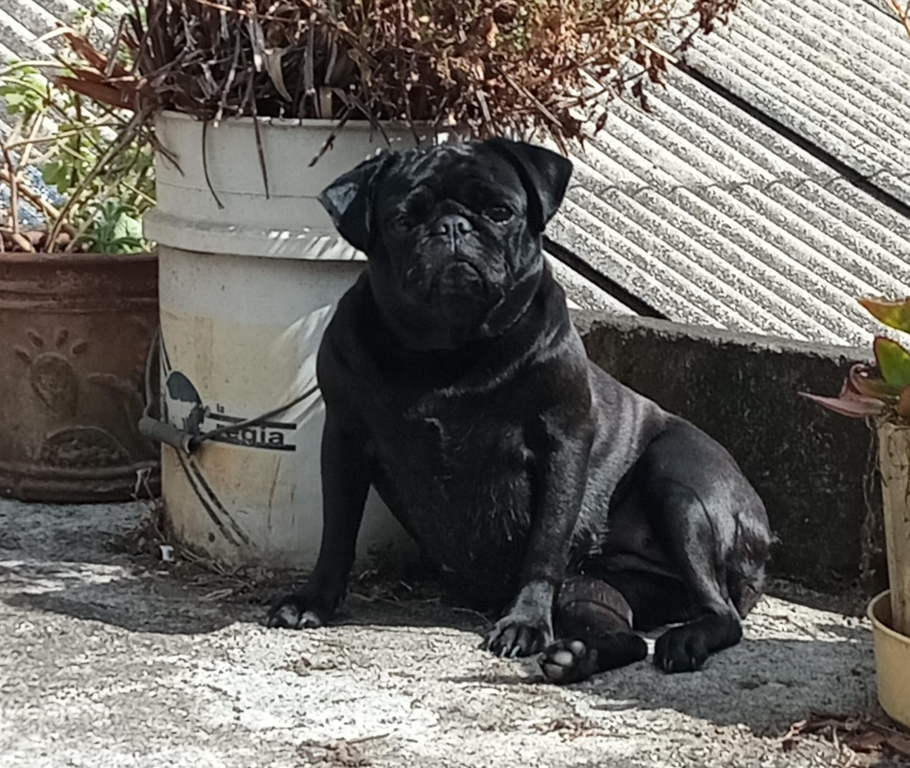
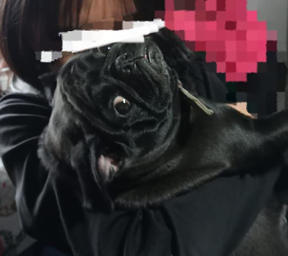
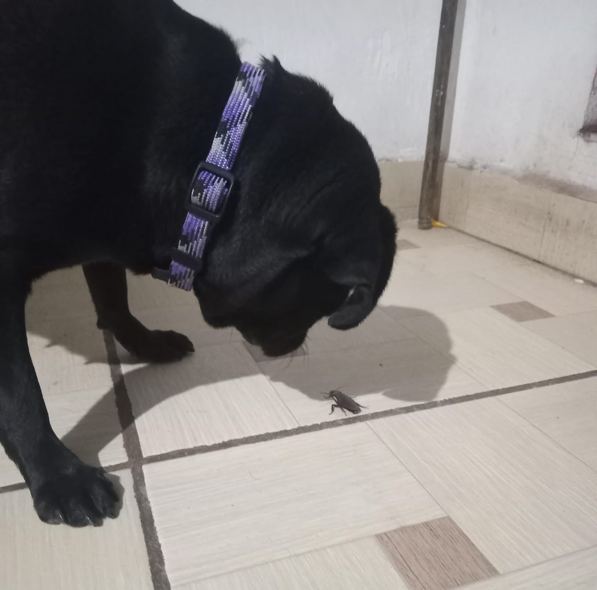
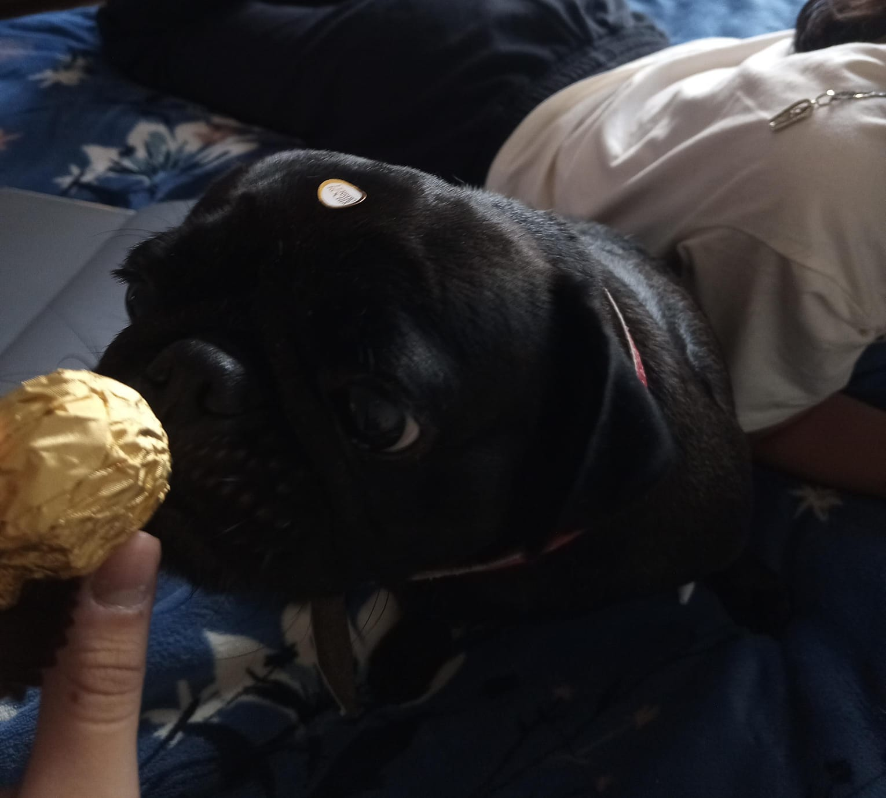
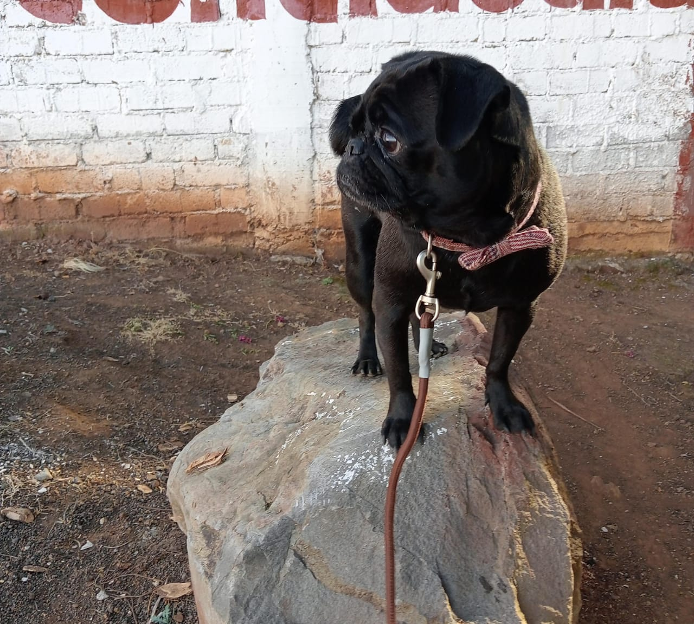
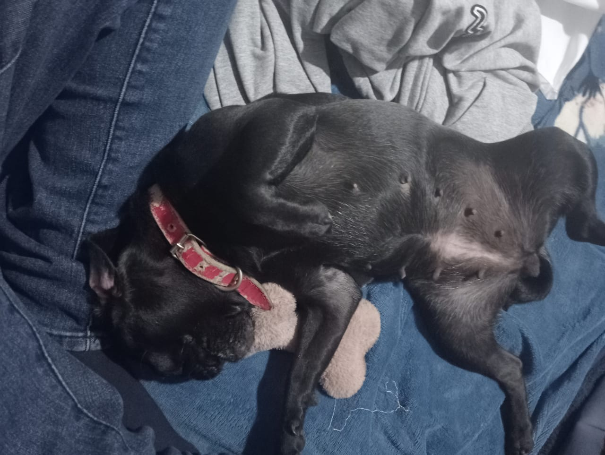

Kiara tiene una personalidad algo bipolar, pero es encatadora aunque en cierto punto depende la persona o animal con el que interectue. Suele ser bastante curiosa, pero tambien temerosa. Es muy amigable con personas y animales que le agradan y bastante juguetona, aunque al momento de jugar suele ser algo brusca. Otra cosa que hay que saber sobre Kiara es lo leal que es hacia los que la redean, es capaz de morder a quien sea para defender a alguien que quiere (tiene complejidad de pitbul).
   Aunque se cree que los pugs no son muy inteligentes hay muchos que llegan a prender comandos basicos e identificar palabras. Kiara comprende a la perfección alrededor de 19 palabras y 6 comandos basicos. Tambien suele ser muy traviesa y divertida, asi como tambien muy terca por lo que fue dificil enseñarla a dar la pata. Y ya para terminar es demasiado glotona y perezosa.
   